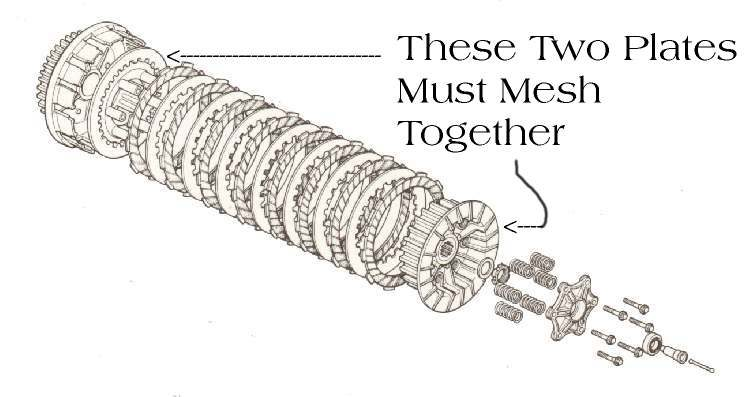

When you open the throttle, the engine revs climb but the bike speeds up slowly, as if it is in a lower gear. It is worst in high gears, up hills, with a passenger or load, and you may smell burning. The clutch plates are not being squeezed hard enough to carry the engine's power. The cause is often simple (no free play at the lever, wrong oil) and only sometimes worn plates or springs. This page is for bikes with a hand clutch lever; for step-throughs see Semi-automatic clutch slips and for scooters Scooter revs but accelerates slowly.
Is it safe to ride?
Ride gently and only as far as you need. A slipping clutch can leave you without power when pulling out into traffic.
Quick checks first
- Pull the clutch lever: does it move a little before you feel the cable pull? No gap at all is a common cause.
- Does the lever spring back fully when you let go?
- Was the oil changed recently, or an additive added?
- Look at the oil level window or dipstick.
- When the plates are out, smell them. A burnt smell means they should be replaced, even if they look and measure within limit.
- Slipping the clutch on purpose (feathering it for long periods in traffic or on hills) is a common way to burn the plates.
Diagnose it step by step
1Is it really the clutch? In third or fourth gear at a steady low speed, open the throttle firmly. Do the revs jump up faster than the road speed?
- Yes: the clutch is slipping. Go to step 2.
- No, revs and speed rise together but slowly: the engine is weak, not the clutch. Go to Engine feels weak and down on power.
2Is the lever free play inside the specified range? (K-Light 125: 10 to 15 mm at the lever tip.)
- No, there is little or none: the clutch is held partly open all the time. Adjust clutch lever free play, then test again.
- Yes: go to step 3.
3Does the lever move smoothly and return fully, and does the cable slide easily?
- No: a sticky cable holds the clutch partly released. Lubricate control cables or Replace the clutch cable.
- Hydraulic clutch: a sticking slave cylinder needs a workshop; Bleed a hydraulic clutch will not cure it.
- Yes: go to step 4.
4Is the oil at the right level, the right grade for a wet clutch, and not old or very dark?
- No: Check the engine oil level, then Change the engine oil with the grade in your manual. Some car oils and additives make a wet clutch slip.
- Yes: go to step 5.
5After steps 2 to 4, does it still slip?
- Yes: the friction plates are worn, the springs are weak or the lifter is sticking. Go to Inspect and replace clutch plates and springs.
- No: recheck free play after a few days. If it keeps shrinking, the plates are wearing.
What happens if you keep riding it: the plates glaze and burn, the springs lose strength from heat, the oil breaks down, and the engine can overheat (Air-cooled engine overheats).
Causes, most likely first
| Cause | How to confirm | Fix |
|---|---|---|
| No lever free play | Lever pulls the cable straight away | Adjust clutch lever free play |
| Sticky cable or lever | Lever slow to return | Lubricate control cables, Replace the clutch cable |
| Wrong, old or low oil | Level low, wrong grade, or slip started after an oil change | Change the engine oil |
| Worn friction plates | Slip continues after the above; plates below limit | Inspect and replace clutch plates and springs |
| Weak springs or sticking lifter | Measured in the workshop | Inspect and replace clutch plates and springs |
Reference values (K-Light 125)
| Item | Value | Source |
|---|---|---|
| Clutch lever free play | 10 to 15 mm | K-Light 125 manual, PDF p. 69 |
| Friction plate limit | 2.6 mm | K-Light 125 manual, PDF p. 225 |
| Clutch spring free length limit | 34.2 mm | K-Light 125 manual, PDF p. 224 |